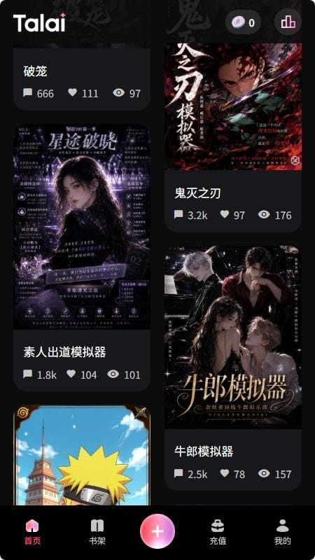

从简单聊天到剧本生态：Talai 这一路怎么长成现在这样
我跟着 Talai 有一阵子了，眼看着它从一个只能聊几句话的小应用，变成能写剧本、能筛角色、能发布作品的完整平台。这篇聊聊它的迭代脉络。
现在这版 Talai 是什么样
打开官网，一排题材标签先跳出来——都市日常、玄幻奇幻、古风江湖、悬疑推理、纯爱甜文……点一下就把角色广场过滤成你想要的模样。选中一个角色，开场卡片弹出来，对话就这么开始了。

聊到一半跑偏了？说句「回到便利店的事」就能把 AI 拉回来。聊得长了人设开始漂？提一句「你是那个值夜班的店员对吧」就能帮它把锚重新扎住。这些都是现在这版才有的体验。
更让我意外的是剧本库。自己写的剧本，跑通了就能发布，别人能搜到、能玩、能打分。还有人给你留反馈，说哪个角色接不住、哪段剧情太平——你回去改，改完保存就生效，不用重新发布。这条创作闭环，搁早几个版本想都不敢想。
它从哪起步
样本文档没提最早的版本号，但从一些痕迹能看出来，最初的 Talai 大概只是个极简的 AI 聊天壳子——输入一句话，AI 回一句话，仅此而已。没有角色广场，没有题材标签，没有剧本功能。
我第一次接触它的时候，好像还是 v0.3 左右。那时候想试试得从官方下载拿安装包，手机侧载才行。加新角色要手动编辑配置文件——写一段 prompt、填个名字，就完了。标签体系还没成型，想找「古风但不江湖」的角色基本靠翻，一屏一屏往下滑。
真正让它有点样子的，是角色广场上线。从那以后，用户可以自建角色并公开，题材标签是后来补上的——一开始只有五六个大类，没现在分得这么细。多标签组合筛选又是更后面的事，我印象里是 v1.2 才加的，之前要同时找「都市+治愈」只能靠搜索关键词碰运气。
关键转折点
第一个转折点是剧本系统的雏形。v1.4 那版开始允许角色带多幕结构——不再是一轮到底的单条对话，而是有开场、有分支、有结局的小故事框架。当时还不能发布，只能自己写自己玩，但这一步把 Talai 从「聊天应用」拉向了「创作工具」的方向。
第二个转折点是发布功能开放。v1.7 左右剧本库上线，首批上架的剧本才二十来个，都是官方示范。我记得那天晚上蹲在电脑前刷，刷到凌晨三点，把每一个都玩了一遍。后来门槛慢慢降下来，普通用户也能发——但有个硬性要求：至少自己跑通五十轮对话不崩。这条线一直留到现在，没松过。具体发布流程我去talai文档翻了一下，里面还有更细的检查清单，比如开场钩子够不够吸引人、AI 角色设定稳不稳定之类的，写得挺实在。
第三个转折点，是对话调控能力的补齐。早期版本聊到二十轮之后基本必崩——要么剧情跑飞，要么人设变味。v2.0 开始加「回到上一幕」「撤销上一条」，v2.3 又补了直接指令式拉回（就是说句话让 AI 回到某个话题）。这一套组合拳下来，长对话的体验才算能用。
从迭代节奏看团队在死磕什么
回头数一下版本，Talai 的更新其实有挺清晰的优先级。
他们一直在死磕创作生态。角色公开、剧本发布、反馈系统、多幕结构——这几条线贯穿了从 v1.0 到现在的整个迭代周期。每次大版本更新，必有一项和创作相关的功能。
长对话体验是第二优先级。跑偏拉回、人设维持、循环打破——这些都是围绕「让对话能聊得久、聊得稳」做的优化。但这块的节奏明显比创作线慢半拍，往往是创作功能先上，过一两个版本才补体验细节。
什么一直没好好做？发现和推荐。题材标签改了三版，但推荐算法到现在还是个简单的热度排序——新剧本冷启动还是难，好内容埋在下面没人翻得到。搜索也只是关键词匹配，没有语义召回。这一块像个没做完的半成品，每次更新列表里有它的名字，但实际效果总差一口气。
照这个路线下一步会走向哪
从迭代规律推，Talai 大概率会沿着创作生态继续往深走。
首先是剧本库的分发机制。现在的剧本数量应该已经过千了，纯热度排序显然顶不住——我猜下一步会加个性化推荐，或者引入玩家评分权重，让好内容能浮上来。
然后是协作创作。现在的剧本是单人写单人发，如果开放多人协作编辑——比如一个人写主线、一个人设角色、一个人打磨对白——能把创作门槛再降一截。样本文档里有提到「部分版本允许其他玩家给剧本打分或留言」，但还没提协作，这块有空间。
长对话体验上，可能会加自动锚定——聊到一定轮数，系统自动在后台提醒 AI 回到人设核心，不用用户手动提。这是从现在的「手动拉回」往前推一步的自然延伸。
当然，以上都是从迭代节奏推的，不是官方消息。如果团队突然换了方向去做语音交互或者跨平台，那也完全有可能——毕竟谁也猜不准。
最后说句感受
Talai 这一路走来，给我最大的感受是它一直在给用户搭舞台，而不是自己唱主角。从角色广场到剧本库，从自建到发布，从个人创作到社区反馈——每一步都是在把更多的控制权交到用户手里。这在同类产品里其实不常见，很多应用会把用户锁在预置内容里，Talai 偏要反过来。
这种思路能不能走得远，现在还不好说。但至少在它的迭代脉络里，我看到了一个清晰的产品逻辑，而不是东一榔头西一棒子的随机堆功能。光这一点，就够我继续跟着看下去了。对了，我整理的一份 Talai 相关资料分别放在 GitHub、Gitee、GitCode，三份内容一样，顺手存哪个都行。